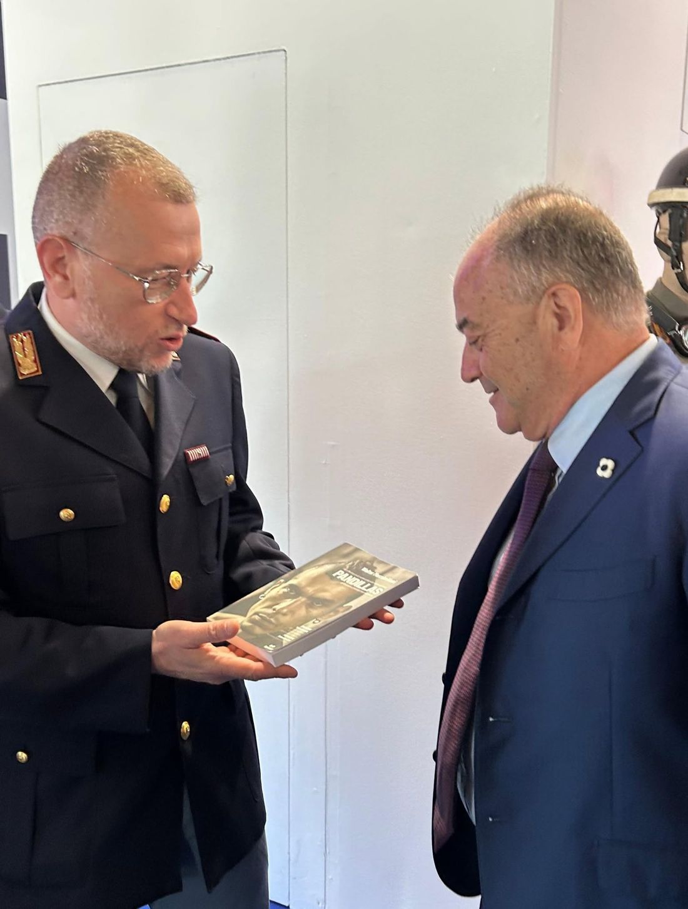

Walter Massimiliani
Un percorso che nasce dall'esperienza diretta sul campo, si sviluppa nello studio dei fenomeni criminali giovanili e approda alla divulgazione.

Esperienza
Walter Massimiliani è un ufficiale di polizia giudiziaria del ruolo degli ispettori della Polizia di Stato. Ha trascorso 15 anni presso la Questura di Milano, svolgendo attività di polizia giudiziaria all'interno del Commissariato di P.S. Mecenate. Ha preso parte a numerose indagini coordinate dalle Procure della Repubblica presso il Tribunale Ordinario e per i Minorenni di Milano, nonché dalla Direzione Distrettuale Antimafia, con particolare attenzione ai sodalizi criminali stranieri.
Per il suo impegno ha ricevuto la Promozione per Meriti Straordinari — la più alta onorificenza riservata al personale della Polizia di Stato — oltre a Encomi Solenni, Encomi e Lodi. Dal 2012 al 2015, su incarico del Questore di Milano, ha curato l'aggiornamento professionale del personale della Polizia di Stato su minoranze etniche, street gang e profili criminali. Attualmente è Dirigente Sindacale FSP Polizia di Stato.
Osservazione del fenomeno
È dall'osservazione diretta delle indagini sulle pandillas — dall'operazione Street Fighters (2006) alle inchieste su Latin Kings, Netas, Trebol, MS-13, Trinitarios e 18th Street Gang — che nasce la necessità di andare oltre la cronaca delle singole operazioni, per comprendere la struttura, il linguaggio e l'evoluzione di questi gruppi nel tempo.
Nel 2018, su incarico del Dipartimento di Pubblica Sicurezza, ha partecipato al documentario in due puntate "Barrio Milano", prodotto da Magnolia per Sky TV e diretto dal giornalista Lirio Abbate, in collaborazione con la Polizia di Stato. Ha inoltre collaborato alla produzione di documentari per la televisione francese TF1, per la televisione svizzera e per il programma "Robinson" andato in onda su Rai Tre.
Tappe principali
Operazione Street Fighters
Prima indagine di rilievo sulle pandillas a Milano, punto di partenza dell'osservazione diretta del fenomeno.
Aggiornamento professionale in Questura
Su incarico del Questore di Milano, cura la formazione del personale della Polizia di Stato su minoranze etniche e street gang.
Documentario "Barrio Milano"
Partecipazione al documentario Sky TV diretto da Lirio Abbate, in collaborazione con la Polizia di Stato.
Pubblicazione di Pandillas
Esce il libro, con prefazione di Franco Gabrielli e postfazione di Adriano Scudieri.
Studio
È laureato in Giurisprudenza (Laurea Magistrale) e ha conseguito un Master di I livello in Scienze Criminalistiche presso l'Università di Camerino. È abilitato alla professione di mediatore civile e commerciale, con regolare iscrizione all'albo del Ministero della Giustizia, ed è inserito nell'Albo dei docenti della Scuola Regionale della Polizia Locale della Regione Abruzzo.
Dal 2020 è docente presso la Scuola per il Controllo del Territorio della Polizia di Stato di Pescara, dove si occupa della materia dell'immigrazione nei corsi di formazione per allievi agenti. Da cinque anni collabora con il Dipartimento di Scienze Giuridiche e Sociali — Sociologia e Criminologia dell'Università "G. d'Annunzio" di Chieti-Pescara e con l'Università Telematica UNIDAV, dove svolge attività di docenza in laboratori professionalizzanti sul co-offending e la devianza giovanile.
Divulgazione: la nascita di Pandillas
Da anni si occupa di devianza giovanile e, dal 2018, tiene regolarmente incontri nelle scuole primarie e secondarie su legalità, uso consapevole del web, bullismo e cyberbullismo. Da questo percorso — tra esperienza investigativa, osservazione diretta del fenomeno e studio accademico — nasce Pandillas, pubblicato nel dicembre 2023 con prefazione di Franco Gabrielli, già Capo della Polizia, e postfazione di Adriano Scudieri, magistrato.
Scopri il libro →